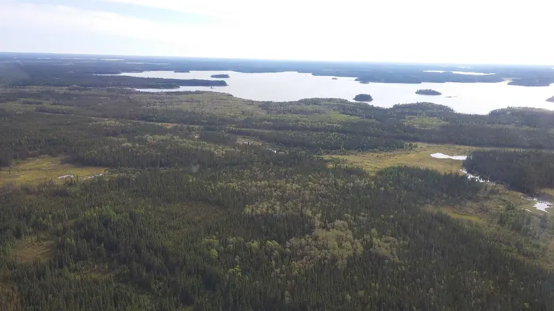
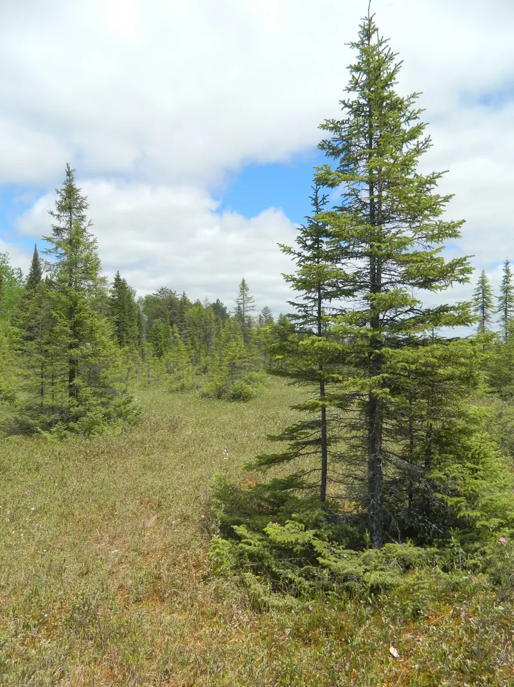
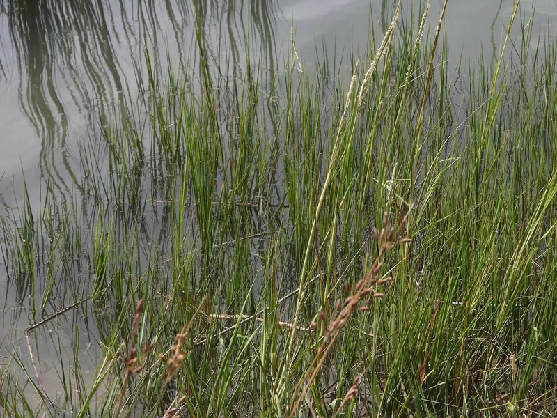

Evergreen Coniferous Forest and Estuarine Zone
AP Environmental Science

Evergreen Coniferous Forest
A terrestrial biome. Long, cold winters and short summers shape a forest of spruce, pine and fir.
Explore the forest
Estuarine Zone
An aquatic life zone. Fresh river water mixes with salty ocean water, and the tides move it back and forth.
Explore the estuary